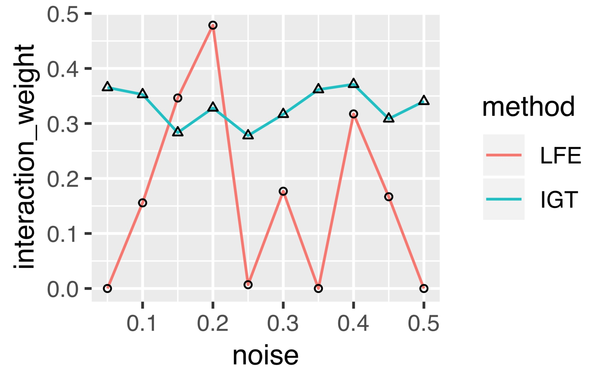
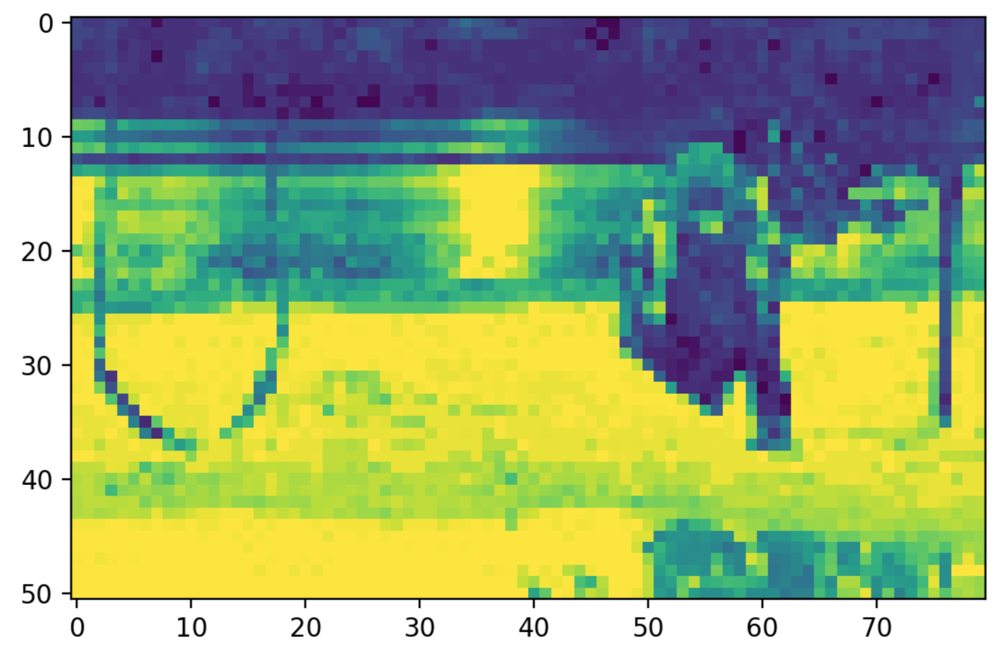
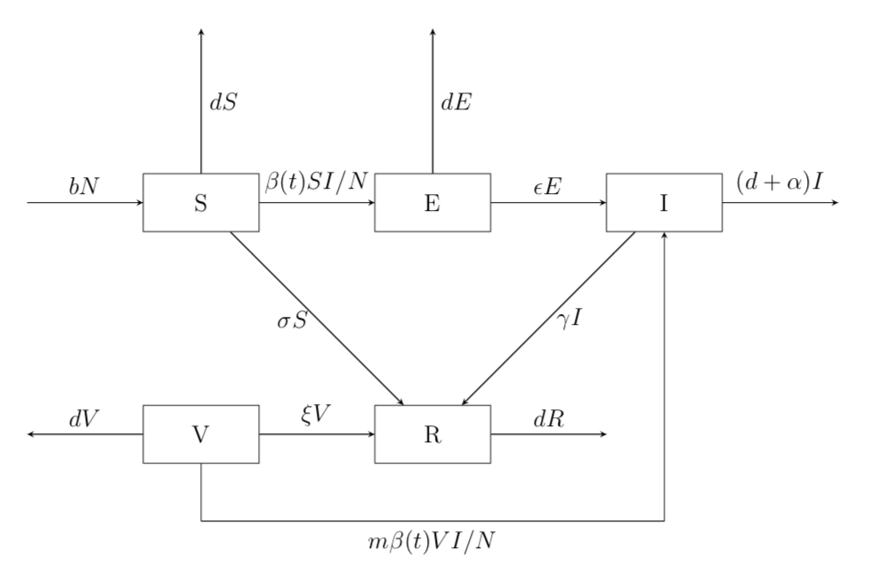

Research Projects
Iterative Max-Min-Entropy Margin-Max with Iteration Term
- Proposed innovative IMMIGRATE algorithm for feature selection with interaction terms
and imIM4E for feature selection with margin-quality. - Designed new classification method for IMMIGRATE.
- Compared the results of IMMIGRATE, imIM4E with about 20 classifiers on UCI datasets
while IMMIGRATE outperforms in most times. - Complete the R package for IMMIGRATE, imIM4E and some other margin-based methods.
Harvard University, MA, USA. 2018.07 - 2018.09.
Department of Statistics
Advisor: Prof. Jun S. Liu & Prof. Pengyu Hong
|  | LFE:Local Feature Extraction |
Change Comparison for Image Sequence
- Proposed CCUC method applying uncertainty coefficient to compare change between image sequences.
- Implemented CCUC on comparable image sequences and showed it is applicable in real situation.
Massachusetts Institute of Technology, MA, USA. 2018.01 - 2018.02.
Computer Science and Artificial Intelligence Laboratory(CSAIL)
Advisor: Prof. Berthold K.P. Horn & Dr. Yajun Fang
|  |
Linear Regression with AR(∞) Errors with Coefficients Constrained in an Ellipsoid
- Applied maximum a posterior estimation to obtain the estimation of regression coefficient
and coefficients of AR(∞) errors. - Computed an upper bound for convergence rate of the coefficients of AR(∞) errors
under elliptical constraint. - Applied constrained estimator under euclidean norm to evaluate consistency results.
- Ran simulation to show the robustness of the new estimation.
Tsinghua University, Beijing, China. 2017.11 - 2018.05.
Center for Statistical Science
Advisor: Prof. Dong Li
 |
Modeling of the Hand-Foot-Mouth-Disease (HFMD) related topics.
- Developed an innovative infectious model including people carrying pathogen as new research
subject when analyzing distribution channel and analyzed the stability of equilibriums by
Liapunov function. - Proposed new models using the continuous/impulsive inoculation analyzed the stability of
equilibriums, and obtained the minimum/maximum inoculation rate under continuous/
impulsive inoculation. - Simulated models under different conditions, which supports the stability analysis well.
Tsinghua University, Beijing, China. 2016.12 - 2017.06.
Department of Mathematical Science
Advisor: Prof. Lijun Yang
|  |